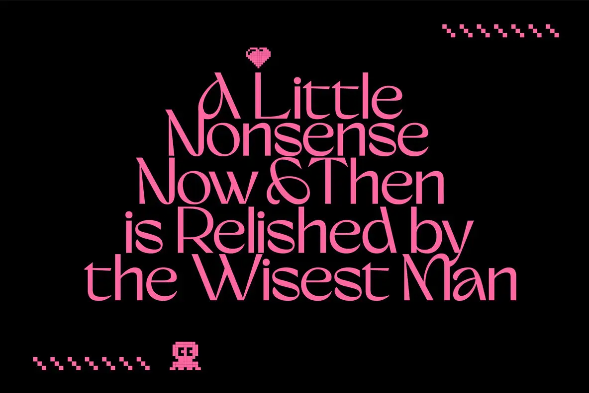

The heart, mascot, and stitch marks use the source's exact pixel crops. The fixed quote keeps its title case and stepped line widths; the selected font changes only its letterforms.
Five source-set lines with original pixel ornaments on a fixed hot-pink field.

The heart, mascot, and stitch marks use the source's exact pixel crops. The fixed quote keeps its title case and stepped line widths; the selected font changes only its letterforms.